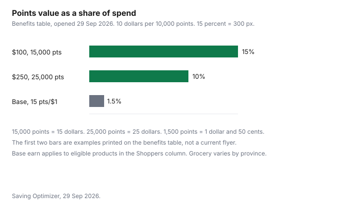

Personal Care · Canada
Shoppers Beauty Events and PC Optimum: Getting More From Cosmetics and Skincare Purchases
A beauty event is a reason to move a purchase you were already going to make. It is not a reason to build a new routine. This page stays on cosmetics and skincare at Shoppers Drug Mart and Pharmaprix. How to load offers, how grocery earn works, and when to hold points for a redemption event are the Food guides: maximizing PC Optimum, banking points for bonus redemption, and PC Optimum beside Scene+ and Moi. Nothing here is a ranking of moisturisers, and a gift card discount is not a partnership this site claims.
Disclosure: Discounted retailer gift cards are an offer type. Saving Optimizer may earn a commission if a partner link is added later. No gift-card partnership is claimed with PC Optimum or Shoppers Drug Mart. Education only.
Key takeaways
- The PC Optimum Program Benefits table, opened 29 Sep 2026, says every 10,000 points is like 10 dollars of free stuff at Shoppers, Pharmaprix, beautyboutique.ca, and the grocery banners it names. Participating gas stations are marked not applicable for that redemption.
- The same table prints 15 points per dollar on eligible products in the Shoppers column. Grocery base earn is marked as varying by province. A live beauty multiplier was not opened, so none is called typical.
- Spend 100 dollars and get 15,000 points, or spend 250 dollars and get 25,000 points, are examples printed on that table. At 10 dollars per 10,000 points they are worth 15 dollars and 25 dollars, which is 15 percent and 10 percent of those spends.
- Shoppers’ returns page, updated 24 Apr 2026, deducts points earned on a return and forfeits bonus redemption value unless you make a direct exchange. Clearance and final-sale items are final.
- A gift with purchase was not copied from a dated offer. Value only the items you would have bought.
How beauty-specific point multipliers and spend-and-get offers work
The benefits table is one page wide, with columns for Shoppers Drug Mart, Pharmaprix, and beautyboutique.ca; for grocery banners such as Loblaw, No Frills, Real Canadian Superstore, Maxi, Provigo, and Joe Fresh; for participating Mobil and gas-bar stations; and for a PC Financial Mastercard. Base earn on eligible products is 15 points per dollar in the Shoppers column. The grocery cell says the rate varies by province. The card cell says points per dollar vary by card. Do not paste the Shoppers 15 into a grocery till or into a gas purchase. Gas redemption of points is marked not applicable.
The table also lists product bonus points, with the example “get 1,000 points on shampoo,” a row titled 20x the Points Events, bonus points events, and personalized offers. The bonus-event examples on the page are spend 100 dollars and get 15,000 points, or get 25,000 points when you spend 250 dollars in store. Those sentences are examples on a benefits table. They are not a September beauty flyer, and this draft did not open a dated offer that would let anyone call 20 times a typical beauty multiplier. If your app shows a different number, the app is the offer. Write the threshold, the points, and the categories before you add anything to the basket.
Gift-with-purchase value: what the 'worth $X' claim really means
No gift-with-purchase page with a dollar claim was opened on 29 Sep 2026, so no gift is given a value here. The method is the same one on the gift-set guide. A “worth” line is a representation about ordinary price. The Competition Bureau’s ordinary-price guidelines, dated 16 Oct 2009, use a volume test or a time test, and the page says those guidelines are under review. Count a gift only if you would have bought that item, at a price you can see, and only for the amount you will use.
A sample you will not open is zero. A full-size gift you already own two of is zero. Points attached to the spend do not rescue the zero. If the offer requires a spend above what you needed, subtract the extra product from the gift before you call the afternoon a saving.
Beauty Boutique vs drugstore aisles: where points and prices differ
The benefits table puts beautyboutique.ca in the same column as Shoppers and Pharmaprix. It does not print a different base rate for the boutique counter than for the rest of the store. This draft did not open a price file that compares the same shade at the boutique and in the aisle, so no boutique premium is stated. Compare the two stickers in the store you are standing in. If only one of them is inside the offer’s category list, the other does not earn the bonus, whatever the display looks like.
A service at the counter, such as a makeover or a lesson, was not on the benefits table as its own rate. Do not assume a service earns the same 15 points per dollar as eligible merchandise. Read the offer. Eligible products are the table’s own limit on the base row.
Timing beauty buys around bonus events without overbuying
List what you will finish before the expiry date. Then ask whether the offer changes the price of that list by more than a straight sale. Using the table’s own examples and the verified 10 dollars per 10,000 points: 15,000 points are 15 dollars, which is 15 percent of a 100 dollar spend; 25,000 points are 25 dollars, which is 10 percent of a 250 dollar spend. Base earn alone, 15 points per dollar, is 1,500 points on 100 dollars, which is 1 dollar and 50 cents, or 1.5 percent, and only on eligible products. A shelf tag that already takes more than that off the same items wins, and it does not require you to hit a threshold.
If you add a third product only to reach the threshold, price that product at its full cost. The points do not pay for it unless you redeem and you would not have bought it anyway. A discounted gift card, if you use one, reduces what you pay. It can also be excluded from an offer. Read the offer before you stack the card. The everyday redemption rate is not the event rate. The table’s spend-your-points example is 10,000 points for 15 dollars of free stuff. That is a different row from the everyday 10 dollars. When to wait for that kind of event is the Food guide linked above, not a second copy of it.
Returns and exchanges on opened cosmetics
Shoppers’ returns page, updated 24 Apr 2026 and opened 29 Sep 2026, does not put cosmetics on the final-sale list. The list that is final includes prescription medication, products with codeine, gift cards, earrings, clearance items, and products marked final sale, among others. The general rule is a refund or exchange with the original receipt within 30 days. Exchanges are in store only. Life Brand, Quo Beauty, and President’s Choice are named as examples of Shoppers or Loblaw brand products that can be returned with the receipt or the original package within 30 days if you are not satisfied with the quality, and the page says some exclusions apply.
Points move with the return. Points earned on the original purchase are deducted. Points redeemed are restored, with the in-store wording putting redeemed points back on a Shoppers gift card. Bonus redemption value is forfeited unless you make a direct exchange. If the return pushes the points balance negative, the refund may be reduced by the value of points earned on the original purchase. An opened bottle you cannot return is a full cost. The return-policy guide is the cross-store comparison. Believe a final-sale sticker over a general sentence.
Where to redeem: links to the Shoppers redemption-event post
Redeem at the everyday rate when you need the merchandise and no better event is actually loaded in your account. The everyday rate this page will state is the one on the benefits table: 10,000 points like 10 dollars at Shoppers and at the grocery banners in that column. Holding a balance for a higher redemption is the point of the bonus-redemption guide. Do not invent a beauty-only redemption rate. The table’s 15 dollar example is an illustration of a spend-your-points event, not a rate you can demand on an ordinary Tuesday.
Gas is the wrong place to redeem on that table, because the redemption cell is not applicable. A Mastercard earn rate is whatever the card page says, and this draft did not open a card page, so no card earn is printed. Beauty purchases still have to be products you will use. The gift-set worksheet is how to refuse a calendar that only looks large.
| Offer type | How the value is calculated | Watch out for |
|---|---|---|
| Base earn | Shoppers column: 15 points per dollar on eligible products. At 10 dollars per 10,000 points, that is 1.5 percent. | Grocery varies by province. Gas redemption is not applicable. Ineligible items earn nothing on this row. |
| Product bonus points | The table’s example is 1,000 points on shampoo, which is 1 dollar at the everyday rate. | An example is not a loaded offer. Read the app. |
| Points events, including a 20x row | The table lists the row. No current multiplier was opened, so no multiple is treated as typical. | Do not plan a basket around 20 times unless the offer in your account says it, with an end date. |
| Spend-and-get points | Table examples: 15,000 points on 100 dollars is 15 dollars, or 15 percent. 25,000 points on 250 dollars is 25 dollars, or 10 percent. | Extra product bought only to hit the threshold is a cost. These examples are not a September flyer. |
| Gift with purchase | No dated gift page was opened. Value only items you would have bought, at a price you can see. | A worth line can fail the ordinary-price tests. Unused samples are zero. |
| Beauty Boutique | Grouped with Shoppers on the benefits table. No separate rate was printed. | A service may not be eligible merchandise. Compare the sticker in front of you. |
| Row | Spend | Points | Value at 10 dollars per 10,000 | Share of spend |
|---|---|---|---|---|
| Shoppers base, eligible products | 100 dollars | 1,500 | 1 dollar and 50 cents | 1.5 percent |
| Table example | 100 dollars | 15,000 | 15 dollars | 15 percent |
| Table example | 250 dollars | 25,000 | 25 dollars | 10 percent |
| Your loaded offer |

Sources & date stamps
- PC Optimum Program Benefits table, PDF on pcoptimum.ca, opened 29 Sep 2026. Shoppers base 15 points per dollar on eligible products. Every 10,000 points is like 10 dollars of free stuff at Shoppers and grocery. Gas redemption not applicable. Examples: 1,000 points on shampoo; spend 100 dollars for 15,000 points or 250 dollars for 25,000 points; spend 10,000 points for 15 dollars as a points-event illustration. A 20x row is listed. The PDF has no issue date on the text extracted.
- Shoppers Drug Mart, Returns and exchanges, updated 24 Apr 2026, opened 29 Sep 2026. Thirty days with a receipt. Points earned are deducted. Bonus redemption value is forfeited unless there is a direct exchange. A negative points balance may reduce the refund. Life Brand, Quo Beauty, and President’s Choice named on the corporate-brand sentence.
- Competition Bureau ordinary-price guidelines, dated 16 Oct 2009, opened 29 Sep 2026, for the gift-with-purchase “worth” question. No gift offer was copied. No shelf price was opened.
Frequently asked questions
How do Shoppers beauty points events work?
The PC Optimum benefits table, opened 29 Sep 2026, lists offer types such as base earn, product bonus points, points events, and personalized offers. At Shoppers the base row prints 15 points per dollar on eligible products, and 10,000 points are like 10 dollars of free stuff. The spend-and-get figures on that table are labelled as examples, not as a current beauty flyer. A live multiplier was not opened, so none is called typical.
Are gift-with-purchase offers worth it?
Only for the items you would have bought anyway, at a price you can see, after you drop products you will not use. A worth line on a gift is an ordinary-price representation, and the Competition Bureau's guidelines on that point are dated 16 Oct 2009 and under review. No dated gift-with-purchase page was opened, so no gift value is copied here. Points do not rescue a gift you will throw away.
Can I return opened makeup at Shoppers?
The returns page updated 24 Apr 2026 does not list cosmetics as a final-sale category. It does make clearance and products marked final sale final, and it allows a general refund or exchange with a receipt within 30 days. Life Brand, Quo Beauty, and President's Choice are named as examples that can come back within 30 days if you are not satisfied with the quality, with some exclusions. Read the sticker, because a final-sale mark overrides the general sentence.
When should I redeem PC Optimum points?
The everyday rate on the benefits table is 10,000 points like 10 dollars at Shoppers and at grocery banners. A spend-your-points event is a different row, and the table's own example is 10,000 points for 15 dollars of free stuff. When to hold points for a redemption event is the Food guide linked from this page. Gas redemption is marked not applicable on that table.
Are points events better than a straight sale?
Compare the dollar value of the points, at 10 dollars per 10,000, with the discount on a straight sale of something you already needed. On the table's own examples, 15,000 points on a 100 dollar spend are 15 dollars, and 25,000 points on a 250 dollar spend are 25 dollars. A sale that cuts the price by more than that, on the same items, wins. If the event makes you buy extra product, the points are not a saving.